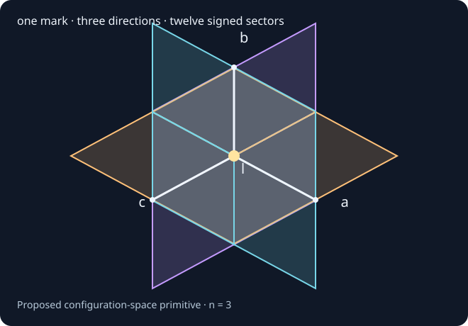
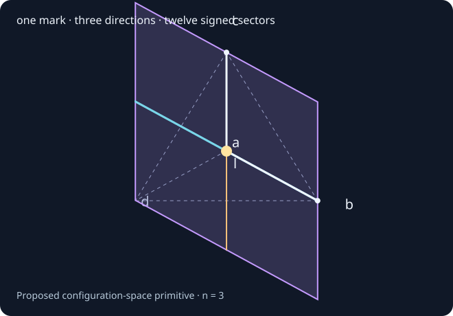
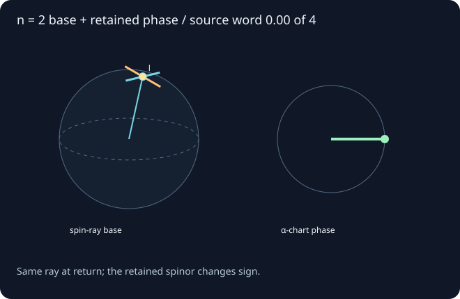
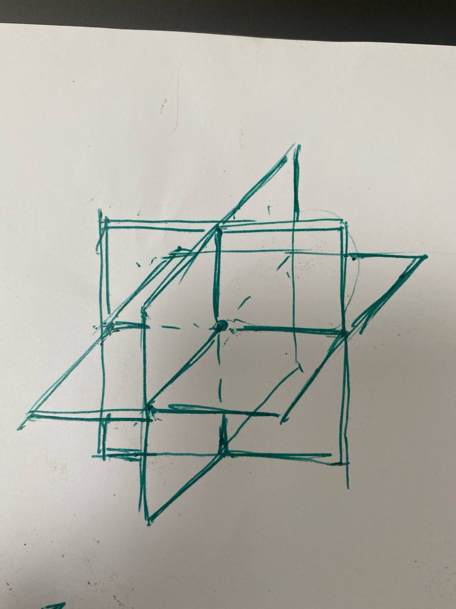

A four-slot packet [l; a, b, c]: one label names the marked configuration and references its supporting complex. The other entries give directed endpoints. Explore how their paths fit together.

Loading the local Three.js view. The static diagram remains available.
Configuration directions · n = 3 Drag to orbit · scroll or pinch to zoom
omit c: ab sheetomit b: ac sheetomit a: bc sheetl: common mark
The same packet in a tetrahedral frame
Keep l at the common center. Aim a, b, c toward three vertices of a regular tetrahedron. The same twelve square sectors become twelve rhombi in three oblique sheets. Selecting a sector or changing the path controls in either block updates both; each camera orbits independently.

Loading the local tetrahedral Three.js view. The static diagram remains available.
Tetrahedral frame · same twelve sectors Drag to orbit · scroll or pinch to zoom
omit c: ab sheetomit b: ac sheetomit a: bc sheetl: unchanged center
The supplied coordinate change preserves the mark, incidences, sector identities and composed paths. It changes Euclidean angles: squares become rhombi. The sectors extend beyond the wire tetrahedron; they are not clipped to its surface. This is a second presentation of the supplied geometry, not a new filling theorem.
Electron-like trial: two-direction base and retained phase
The prior spinor carrier supplies a candidate n = 2 ray base. Two real directions change its spin state; the supporting label complex must also retain phase and lifted transport. This block explores that candidate independently of the n = 3 pictures above.

Loading the recorded source operations and local Three.js view.
Two-direction base + retained lift Drag to orbit · interpolation is illustrative
l: marked initial rayu: first local directionv: second local directionretained chart phase
The actual source matrices are applied in the order U → V → U inverse → V inverse. Their composite is −I. At return the spinor changes sign while its ray is unchanged. The retained face encoder and signed pairing keep that distinction. An isolated spin-state probability does not distinguish the two signs.
The continuous arcs and tangent frame are supplied for the display. The exact trial certifies the discrete matrices and prefix states, rather than this interpolation or a completed n = 2 packet. Its phase-erased base has two local real directions; a normalized full spinor has a further phase direction. A common definition of configuration dimension is still needed before comparing this trial with the proposed proton packet.
Actual source face-block encoding
These are the existing tetrahedral source blocks Jz, not the proposed signed dependency sectors. Their amplitudes retain the source sign even when all weights agree.
l is the marked point and the reference to the whole retained configuration. Barycentric placement expresses that reference role. Access to the label must recover the required supporting records; a coordinate or bare hash alone supplies no such recovery.
Endpoints with directions
Each of a, b, c specifies an endpoint together with a transport from the mark. The path gives the endpoint its directional meaning. Signed continuation along those directions is additional supplied structure in this model.
One coherent construction
The tuple supplies actual boundaries for the complex’s comparisons. Each square compares two orders of directional transport. Retained witnesses would establish their compatibility and remain available for later construction.
Why twelve?
Choose one omitted direction. Along each remaining direction choose a signed side. For three directions, this is 3 × 2 × 2 = 12 sectors. The signs specify sides, not a further choice of clockwise or anticlockwise traversal.
The three sheets are coordinate hyperplanes through the mark. In this three-dimensional configuration picture, their codimension-one sectors are squares. The supporting complex has sheets and boundaries; no solid volume filler is supplied.
Minimal coverage: every omitted-direction/sign combination is represented. The number of independent proofs may be smaller if the construction rules derive some witnesses from others.
dependency sectors = n · 2n−1
The 3D drawing always shows n = 3. This control changes the combinatorial count only. At larger n the cells have dimension n−1; they are not all squares.
From a packet to sustained capability
The proposal associates dependency sectors with incoming capabilities and the n directions with outgoing capabilities. Compatible encounters should recover those capabilities in both orders: i ∘ o ∘ i ≃ i and o ∘ i ∘ o ≃ o. Longer composites need witnesses comparing their recovery procedures.
A proof would show what supports the configuration, what it enables, and how its encounters preserve a coherent ability to participate again. Univalent foundations provide identity, transport and higher comparisons; this proposal additionally asks for source-generated realization and an explicit account of its supporting structure.
A candidate accounting—not a predetermined obligation count
A sector paired with a direction has n² · 2^(n−1) possible addresses. Pairing such an encounter with a direction, a sector, or another encounter gives three candidate products:
Typing determines which addresses compose. Actual recovery and coherence witnesses must be constructed before this count can be interpreted as a realization cost. The proton-like source already has a verified 1836-arrow presentation with a different, precise stage interpretation; a source-level correspondence is an open task.
The sketch behind the model

The motivating sketch. This workbench fixes an explicit signed-coordinate interpretation for discussion.
What is supplied and what remains to prove
This page supplies signed coordinates, a common center, sector boundaries and illustrative path playback. It checks their finite geometry and counting. A source-generated packet, meaningful independent configuration directions, licensed operations, filling witnesses, continuation preservation and a physical identification remain research obligations. “Configuration space” here does not identify its directions with physical spatial axes or assert complex-number coordinates.